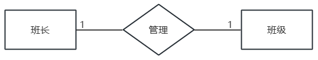
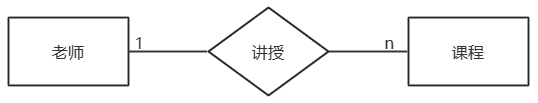
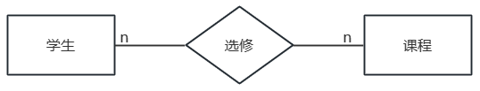
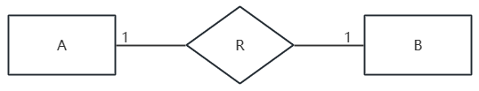
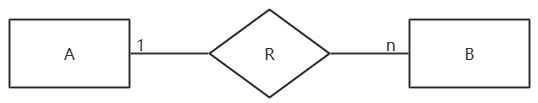
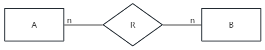
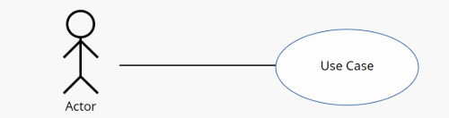
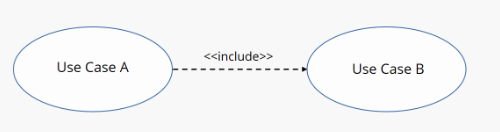
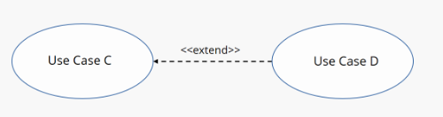

- 结构化分析 System Flowchart
- 数据流图 DFD
- 输入处理输出图 IPO
- 实体关系图 E-R
数据流图 DFD
- Data Folw Diagram
- 数据流图 DFD 可以体现数据的加工和处理过程
- 和数据字典 DD 共同构成系统的逻辑模型
- 原则：自顶向下，逐步细化
- 通过功能分解，完成数据流图的细化
- 要素
1. 外部实体 External Agent/Entity
- 外部的人或组织
- 表示数据的流向：数据流的发源|起始或归属|结束
- 名词
- 矩形
2. 加工 Process
- 描述输入数据流到输出数据流之间的变换
- 每个加工必须既有输入数据流，又有输出数据流
- 每个至少有一个输入一个输出
- 需要加工规格来描述输入和输出的加工规则，不涉及具体细节
- 动词|动词+宾语
- 圆形或圆角矩形
3. 数据流 Data Flow
- 由固定成分的数据组成，有方向
- 不是控制数据流，不决定什么时候流什么时候不流
- 名词|形容词+名词
- 箭头
控制流代表的是“指令”或“触发信号”；描述的是程序执行的顺序或条件
简单来说，控制流回答的是“什么时候做”或者“要不要做”的问题
特征：通常不包含具体的数据内容，而是一个信号（比如“开始”、“停止”、“确认”、“开关”）
作用：控制程序的逻辑走向
4. 数据存储|文件 Data Store
- 存放数据
- 流入的表示写；流出的表示读
- 系统中，既有读的数据流也有写的数据流
- 子图中，可能只有读或写的数据流
- 名词
- 两条平行线或开口矩形
存储和实体不能直接发生关系，必须通过加工
- 数据流的关系
- 加工触发的逻辑
1. 与 *
- 不可或缺
- 表示所有的输入（或输出）数据流必须同时存在，加工才能执行
- 全部满足
A * B → C：A、B 同时存在，才会加工成 C
2. 或 +
- 可选
- 表示多个数据流中，至少有一个存在即可
- 满足其一个或多个
A + B → C：有 A，或有 B，或有 A 和 B，就会加成成 C
3. 异或 ⊕
- 排它性
- 表示多个数据流中，必须且只能有一个存在
- 二选一/多选一
A ⊕ B → C：要么有 A 或要么有 B，就可以加工成 C
- 数据平衡原则
- 父图与子图平衡
数量相同
名字相同
如果父图中一个输入/输出数据流对应于子图中几个输入/输出数据流，而子图中组成这些数据流的数据项全体正好是父图中这个数据流，仍然可以人为他们是平衡的
- 子图内部平衡
考虑加工的平衡
黑洞：只进不出；吞噬
奇迹：只出不进；凭空出现
命名错误：输入和输出命名相同
输入处理输出图 IPO
- 用来说明每个模块的输入 Input、处理 Process 和输出 Output
- 消除分析和设计之间的鸿沟
提交订单时，系统计算最终应付金额
- 输入 (Input)
- 商品列表（包含商品ID、购买数量）
- 用户选择的优惠券信息
- 配送地址
- 处理 (Process)
- 根据商品ID查询每个商品的单价
- 计算商品小计总额（单价 × 数量）
- 根据优惠券规则，计算并应用折扣金额
- 根据配送地址，计算配送费用
- 汇总所有费用，得出订单总金额
- 输出 (Output)
- 订单最终总金额
- 费用明细（商品总价、优惠金额、运费）
- （如果优惠券无效）返回无效优惠提示
计算员工薪资
1. 输入 (Input)
- 员工本月工时
- 员工的时薪
- 适用的税率
2. 处理 (Process)
- 计算总薪资：总薪资 = 工时 × 时薪
- 计算应缴税额：税额 = 总薪资 × 税率
- 计算净薪资：净薪资 = 总薪资 - 税额
3. 输出 (Output)
- 员工的净薪资（实发工资）
- 扣税详情
实体关系图 E-R
- 描述系统的数据关系
- 从用户角度出发
- 与实现方法无关
- 要素
1. 实体 Entity
- 数据对象
- 用矩形表示；使用名词
- 区别与其他对象的事物或事件
- 题干中通常按照主要关系进行描述，如：分公司关系、部门关系、员工关系
- 关系的描述使用菱形，从题干中找关键字写入，并标注关系两侧实体的对应关系
- 主外键识别：通常以XX号表示。如部门号、主管号、分公司编号
2. 属性 Properties
- 数据对象的属性/实体某方面的属性
- 用椭圆表示，使用名词；用无向边与其实体集相连
简单属性|原子属性、复合属性
单值属性、多值属性、NULL属性
派生属性：由一个属性可以派生出当前属性，如出生日期和年龄都是实体属性，则年龄是派生属性
3. 联系 Relationships
- 数据对象的关系/实体间的联系
- 用菱形表示，使用动词；联系以适当的含义命名，名字写在菱形框中，用无向连线将参加联系的实体矩形框分别与菱形框相连，并在连线上标明联系的类型，即1—1、1—n或n—n
示例

1:1

1:n

n:n
- 绘制步骤
- 找出所有的实体
- 确定实体间的联系
- 完善实体的属性
- 转换关系模式
- E-R 图体现的是实体和实体之间的关联
- 将 E-R 图转换为关系模式：从概念模型到逻辑模型
- 把直观的图形化设计，翻译成关系型数据库能够理解和实现的结构
- 一个实体转换为一个关系模式
- 关系 Relation
是一张二维表，表示数据的逻辑结构。表中每一行代表一个记录（元组），每一列代表一个属性（属性值的取值范围为域）
- 关系模式 Relation Schema
对关系的结构描述
可以形式化地表示为：R（U，D，dom，F），其中R为关系名，U为组成该关系的属性名集合，D为属性组U中属性所来自的域，dom为属性向域的映象集合，F为属性间数据的依赖关系集合
通常简记为：R(U)或R(A1，A2，…,An)其中R为关系名，U为属性名集合，A1，A2，…,An为各属性名
转换关系模式
| 联系类型 |
转换策略 |
新关系模式的主键 |
| 一对一 1:1 |
合并到任意一端表 |
被合并表的主键不变 |
| 一对多 1:n |
合并到“多”方表 |
多方表的主键不变 |
| 多对多 m:n |
必须创建一个新表 |
两端实体主键的组合 |
1:1

1:1
- 规则：比较灵活，可以转换为一个独立的新表，也可以合并到任意一端实体对应的表中
- 合并方法：通常将联系合并到其中一端，在合并的表中增加一个外键，这个外键是另一端实体的主键
方案1：独立关系/转换实体；将关系 R 单独独立出来（3个表）
- 实体 A → 1个关系
- 实体 B → 1个关系
- 关系 R → 1个关系
方案2：归并关系/将关系 R 归并到 A（2个表）
- 实体 A 和关系 R → 1个关系
- 实体 B → 1个关系
方案3：归并关系/将关系 R 归并到 B （2个表）
- 实体 A → 1个关系
- 实体 B 和关系 R → 1个关系
优先选择归并方案，减少表的数量，提高查询性能
除非有特殊理由，否则不选独立方案
1:n

1:n
- 规则：通常不创建新表，而是将联系“合并”到“多”方实体对应的表中；只能归并到多端
- 合并方法：在“n”方表中，增加一个外键，这个外键是“1”方实体的主键。同时，关系本身的属性（如果有）也一并加入“n”方表
方案1：独立关系
- 实体 A → 1个关系
- 实体 B → 1个关系
- 关系 R → 1个关系
方案2：归并关系
- 实体 A → 1个关系
- 实体 B 和关系 R → 1个关系
n:n

n:n
- 都是 n 端，那归并到哪个呢？所以干脆都不归并，自己独立
- 规则：必须转换为一个独立的新关系模式；增加新表
- 新表的构成：
属性：包含两端实体的主键，以及联系本身的属性（如果有的话）
主键：由两端实体的主键组合而成
唯一方案：
- 实体 A → 1个关系
- 实体 B → 1个关系
- 联系 R → 1个关系
数据字典
- Data Dictionary
- 数据的信息集合
- 对数据流图中所有元素定义的集合
数据流条目
数据元素/数据项条目
数据存储条目
加工/处理条目
- 符号
- 定义 =
定义的起始符号
表示等价关系，即左边的数据项由右边的成分构成
机票 = 姓名 + 日期 + ... 表示“机票”这个数据结构的定义就在等号右边
- 组成 +
必须项
数据项由多个部分按顺序组合而成
机票 = 姓名 + 日期 + 航班号 + 起点 + 终点 + 费用
- 多选一 []
多选一：从多个选项中选择一个；互斥
用于描述互斥的数据项或枚举类型
机票 = 姓名 + 日期 + 航班号 + 起点 + 终点 + 费用 + [信用卡 | 支付宝 | 微信 | 现金] + [成人 | 儿童 | 婴儿]
- 可选 ()
可选；可有可无；强调的是有还是没有
括号内的数据项是可选的，即可以出现，也可以不出现
用于描述非必须填写的字段
机票 = 姓名 + 日期 + 航班号 + 起点 + 终点 + 费用 + (优惠券) + (延误险)
- 重复 {}
表示循环或重复；强调的是次数
花括号内的数据项可以重复出现； 0 次、1 次或多次
用于描述列表或数组类型的数据
有时会指定上下边界，如 3{机票}10 表示至少3张，至多10张
机票 = 姓名 + 日期 + 航班号 + 起点 + 终点 + 费用 + {附加服务费}
用例图 Use Case Diagram
- 面向对象分析
- 从用户角度看/获取系统提供的服务
- 不关心设计细节
- 用户如何与系统交互
- 一般步骤
1. 确定系统范围 Scope
2. 确定系统边界 Boundary
3. 确定系统的参与者 Actor
4. 确定系统的用例 Case
- 参与者 Actor
- 与系统发生交互的人员或其它系统、设备
- 使用系统
- 从系统获取信息
- 为系统提供信息
- 管理、维护、保障系统运行
- 使用小人表示
- 用例 Use Case
- 核心
- 一个系统包括多个用例
- 每个用例是系统向外提供的一个完整服务或功能
- 使用椭圆表示
- 关联 Communication Links
- 参与者和用例之间的驱动和反馈关系
- 实线 solid line：参与者和用例之间
- 虚线 dashed line：用例之间
1. 关联关系 Association
- 表示参与者和用例的关系
- 线型：实线实心箭头，指向用例
- 通常用无箭头的实线表示关联，因为交互往往是双向的

关联关系
2. 包含关系 Include
- 表示用例之间的关系；必然要使用到
- 逻辑：A 发生的时候，B 一定发生。B 是 A 的一部分，抽离了 B，A 就不完整了
- 取款时，打印凭条不是必须的
- 方向：从 基础用例/主流程 → 包含用例
- 线型：虚线

包含关系 Include
3. 拓展关系 Extend
- 表示用例之间的关系
- 业务延申，非必须
- 逻辑：A 发生的时候，B 不一定发生。B 只是在特定条件下给 A 增加一点额外功能。抽离了 B，A 依然能独立跑通
- 方向：从扩展用例 → 基础用例/主流程
- 线型：虚线

拓展关系 Extend
4. 泛化关系 Generalization
- 也称归纳；继承
- 实线空心箭头
- 方向：子类 → 父类